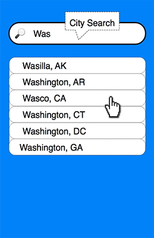
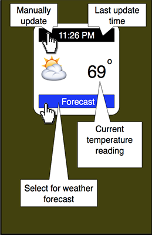
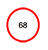
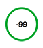

User Guide
WxAlert (hereby known as the app) is a mobile application that provides current, forecast and alert weather information for more than 20,000 cities across the United States and its territories. Current, forecast and alert information are displayed using various weather and alert icons. A description of each weather icon is available at weather icons. General description of alert icons is available at alert icons and caution icons.
Forecast Update
Weather forecast data is only fetched at the data timestamp expiration time. Since forecast data is generally updated every twelve (12) hours, the app generally fetches forecast data twice daily. Current weather data, such as temperature, is generally valid for two (2) hours. So current weather data update is performed every two (2) hours. Typical app forecast update times are 6:30 am and 6:30 pm local time each day.
Cellular or WiFi Network is required to fetch and update weather data.
Battery Life
Fetching data only when necessary has the advantage of extending device battery life. Offline data storage in a local database reduces the need to fetch data from the network each time the app comes to the foreground. This also extends battery life. No updates are performed while the app is in the background.
Manual options are provided for updating current weather data before the two hours expires.
User Interface
Four tab icons are shown in the app. At first launch the search tab is the only one (1) that is active. When the first city search is performed, all other tabs become active.
- City Search
- Weather Forecast
- App Settings
- App Information
City Search View
Current, forecast and alert weather information begins with a city location. Users can chose to "Allow WxAlert to access your location while using the app" or manually enter a search location. The first three characters of a city name will generate a list of city and state matches from a local database. Current local weather conditions are displayed when a city location is selected.
Location Privacy
Sharing of location information is limited to fetching weather data for your current location or other city searches that are performed. No location information is shared with third party entities for marketing or advertisement (ads) generation. No ads or marketing schemes are displayed or generated by this app. For more information see Privacy Policy
Current Weather View
Weather elements displayed are sky condition, temperature (degrees Fahrenheit), wind direction, relative humidity, wind speed, wind gust and visibility.
Only weather data for the last search city is displayed in the Current Weather View. To see current weather data for a previous city, search again in the City Search View.
Update Frequency
Updated temperature information is generally only available every two (2) hours. As a result, current weather information is only automatically updated every two (2) hours. This means if the app is placed in the background for more than two hours, on return to the foreground it will send a request to the weather server to obtain an update. A stale temperature value will appear enclosed in a red circle.
American Standard
The app uses American Standard units of measure only. There is no option to change to metric values at this time.
- Temperature: Fahrenheit °F
- Wind speed: Miles Per Hour (mph)
- Wind gust: Miles Per Hour (mph)
- Visibility: Miles
Forecast View
Forecast View consist of several data sections integrated into one display view.
- Scrollable Alert List
- Search City Name
- Scrollable Forecast list
- Detailed Alert Icon
- Current Temperature
Scrollable Alert List
Scrollable alert list consists of icons representing all currently posted weather alerts.
Search City Name
The search city name is presented as the full city name and two character state identifier. This is also the name displayed when a different city is selected in the app settings.
Scrollable Forecast
Weather Forecast information is generally updated two (2) times each day. Once in the morning and once in the evening. Typical update times are 6:30 am and 6:30 pm local time. Forecast includes sky condition, wind direction and wind speed. Also included are expected high and low temperatures.
Detailed Alert Icon
Embedded in the Scrollable Forecast is a Detailed Alert Icon. This icon is displayed when one or more weather alert is posted. The Detailed Alert Icon is always the latest alert in the list. Tapping the alert detail presents an alert detail page. Swiping on the presented page shows additional details if more that one icon appears in the Alert List. The Alert List is shown at the top of the Forecast View.
Current Temperature
The current temperature, that is displayed in the Current Weather View, is also displayed in the Forecast View. It is displayed in two (2) formats. Expired, shown encircled in red, and current, shown encircled in green.
Erroneous Reading
Occasionally, a weather station will not be in service. When this occurs a temperature reading of -99 is presented. The solution to this issue is to select an active weather station from the list of stations shown in the Station View. The Station View can be selected from the App Settings Tab. See troubleshooting.
